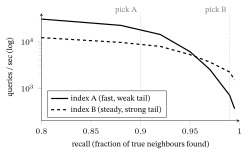
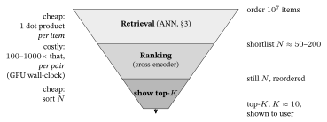

Appendix A — Implementation Choices: A Practitioner’s Field Guide
1. How to choose anything here — five rules that outlast the leaderboard
Before any specific brief, the meta-method. These five rules recur in every category below; internalize them and you can re-evaluate any option, even ones released after this chapter.
- The benchmark is a prior, not a verdict — validate on your data. Every leaderboard here (MTEB, ann-benchmarks, LMArena, CoNLL) is general-domain and gameable. A model trained on benchmark-similar data can top the chart yet generalize worse out-of-domain than a lower-ranked one. Use the leaderboard to shortlist 2–3 finalists, then rank them on a tiny in-domain eval you build yourself (even 50–200 examples from your own catalog). Leaderboard rank does not transfer to your domain.
- License is a hard gate — check it first, and check the version. “Open weights” \(\ne\) “open source” \(\ne\) “open data.” Apache-2.0 / MIT / BSD are clean for commercial use; CC-BY-NC (non-commercial), AGPL (network-copyleft), and custom terms (Llama’s community license, Google’s pre-Gemma-4 terms) carry real restrictions. Read the weights license (it can differ from the repo’s code license), and re-check per version — Gemma switched from a custom license to Apache-2.0 at v4; assuming “Gemma = Apache” for an older version is a compliance bug.
- Pick the smallest thing that clears your metric. In a recommender the model is almost always a feature, not the product — an embedding, a generated tag, a candidate list. A 560M embedder or a 4B LLM that passes your offline bar beats a 7B one that costs \(10\times\) the latency for \(+1\) benchmark point. Shrink further with quantization (4-/8-bit) and Matryoshka (truncatable embeddings). Start small; scale only when a measured bottleneck forces it.
- Maintenance is a feature. An abandoned library is a liability — no bug fixes, no security patches, breakage on the next dependency bump. Check the last real commit on the default branch (GitHub’s “updated” timestamp lies — it bumps on any tag or branch push), the last release, and open-issue health before adopting. A clever dead project loses to a boring maintained one.
- This is a snapshot; the rule is the asset. Re-derive, don’t memorize. When a new model tops the board next quarter, run it through rules 1–4 — your data, its license, its size, its maintenance — and decide for yourself. The brief is perishable; the method is not.
If you must pick today — the default stack. The rules above outlive any name, but here is where they land for this handbook’s jobs, as of this snapshot: a small permissive text embedder (multilingual-e5 / BGE-M3, §2) → HNSW or pgvector for vector search (§3) → a small Apache-2.0/MIT LLM in the 1–9B tier, served with vLLM, for offline feature generation (§4) → RecBole / Cornac for honest baselines (§5) → spaCy or GLiNER for text-to-feature extraction (§6). Start here; let rules 1–4 (your data, its license, its size, its maintenance) move you off it only when a measured need forces the change.
2. Text embedding models
The engine of semantic retrieval and of every LLM-recsys feature pipeline: text (item descriptions, user profiles, reviews) \(\rightarrow\) a vector you can compare by cosine (Linear-Algebra primer §4) and serve through a vector index (§3). The same object as the embeddings the graph notes propagate.
How to choose. Default to a small, permissive workhorse — multilingual-e5-large-instruct (560M, MIT) or BGE-M3 (MIT, 8K context, gives dense + sparse + multi-vector from one model). Step up to a 7–8B LLM-based embedder (Qwen3-Embedding, Apache-2.0) only when retrieval quality is the measured bottleneck and you can pay the latency/VRAM. Treat the proprietary APIs (Google Gemini-embedding, Voyage, Cohere) as a quality ceiling to benchmark against, then self-host if economics or data-governance demand it. Use Matryoshka truncation to fit the vector to your index/latency budget, and rank your finalists on your own corpus — there is no single winner, only a size/latency/license/domain trade-off.
| Model | Maker | Dim (Matryoshka?) | License | Best for |
|---|---|---|---|---|
| Qwen3-Embedding (0.6 / 4 / 8B) | Alibaba | \(\le 4096,\) MRL | Apache-2.0 | Best open quality; 100+ langs; 32K context; 0.6B is a strong small option |
| multilingual-e5-large-instruct | Microsoft | 1024 | MIT | The default multilingual workhorse — cheap, permissive, short text |
| BGE-M3 | BAAI | 1024 | MIT | One model for dense + sparse + multi-vector (hybrid); 8K context |
| EmbeddingGemma-300M | 768, MRL | Gemma terms (gated) | On-device / edge; smallest “good” model — but non-OSI license | |
| Stella-1.5B (en v5) | NovaSearch | 512–8192, MRL | MIT | Rich truncation ladder for storage/latency tuning (“1024d \(\approx 8192\)d”) |
| Nomic-embed-text-v2 | Nomic | 768, MRL | Apache-2.0 | Fully open (weights + code + data); audit/reproducibility priority |
| API baselines (not open) | Google / Voyage / Cohere / OpenAI | reducible | proprietary | Gemini-embedding tops retrieval; Cohere-v4 is 128K + multimodal; OpenAI-3 is now a low bar |
Reading the benchmark — MTEB / MMTEB. The Massive Text Embedding Benchmark and its 250+-language successor MMTEB are the standard. A dated snapshot (mid-2026 — re-check, it moves monthly): Qwen3-Embedding-8B tops the open multilingual board (\(\approx 70.6\)), while Gemini-embedding leads on English / retrieval; so sort by the slice you serve, not the headline average. Three habits keep you honest: (1) Sort by the Retrieval sub-score, not the headline average — for recsys/RAG, retrieval is the column that predicts your quality, and a model can top the headline average yet lose on the retrieval slice — an overall average hides per-task gaps, so a leaderboard champion can be a mediocre retriever. (2) Distrust the top by 1–2 points — overfitting to benchmark-like data is documented, and the same model carries different scores across sources. (3) Prefer models that disclose training data and look at zero-shot numbers.
2026 state of play.
- LLM-based embedders won the leaderboard (Qwen3-Embedding, GTE-Qwen2, EmbeddingGemma) — but bring 7–8B latency/VRAM, a real serving cost in a recommender.
- Small models are usually the right recsys call. A 560M
e5model captures most of the quality at a fraction of the cost; for an embedding used as a feature, that is the default. - Matryoshka (MRL) is now table stakes — embed once at full dim, store/index at a shorter prefix (e.g. \(3072 \rightarrow 768\)) to cut ANN memory and latency at near-zero quality loss. Pair with int8/binary quantization for further shrink. The highest-leverage production lever.
- License traps: Apache/MIT are clean (Qwen3, e5, BGE-M3, Stella, Nomic). Gemma-licensed models (EmbeddingGemma) are gated, non-OSI; Jina-embeddings-v4 shipped under a non-commercial-flavoured license. Read before you ship.
- Fine-tune only when your domain is genuinely off-distribution (specialist catalogs, non-English item text, behaviour-driven similarity that text alone can’t capture) and you have labeled / implicit-feedback pairs. In recsys the bigger win is usually combining a decent off-the-shelf text embedding with collaborative signal, not chasing MTEB points.
Multimodal embeddings (image + text items)
When items are images as well as text (products, films, listings), embed both into one shared space, so a text query can retrieve an image and an image can retrieve text. As of mid-2026: SigLIP 2 (ViT-SO400M) is the strongest fully-open image–text model; JinaCLIP-v2 adds multilingual text and Matryoshka dimensions (truncate to 64-dim to shrink storage at little cost); managed options are Cohere Embed v4 (also self-hostable) and Voyage-multimodal-3 (API-only). Decision rule: pick one model that maps text and images into the same space (so a single cosine works across modalities), and use Matryoshka or quantization to cap the storage of a large catalog — don’t bolt a separate image model onto a separate text model, because their spaces won’t align.
3. Vector search / approximate nearest neighbour (ANN)
How you serve embeddings at scale — the candidate-generation stage of the recommendation funnel (Traditional RecSys §7): cut millions of items to a few hundred fast, so the expensive ranker scores only those.
How to choose. Start with the simplest thing that fits in RAM. If your catalog is \(\le 1\)–10 M vectors with light filtering, an embedded library — hnswlib or FAISS — is enough; you own one index file and run no extra system. Graduate to a vector database the moment you need any of: rich metadata filtering fused with ANN (“in-stock AND in-region AND not-already-seen”), live inserts/updates/deletes, sharding/replication, or hybrid dense+sparse (BM25) retrieval. If you already run Postgres and are \(\le 10\) M items, pgvector is very often the answer — ANN and full-SQL filtering in your system-of-record, no sync pipeline.
| Tool | Library or DB | Core algorithm(s) | License | Best for |
|---|---|---|---|---|
| FAISS | Meta | IVF, IVF-PQ, HNSW, +GPU (CAGRA) | MIT | The Swiss-army library: widest index menu; only one with mature GPU; billion-scale on a big box |
| hnswlib | nmslib | HNSW only | Apache-2.0 | The reference HNSW — one tiny battle-tested dependency when HNSW is all you need |
| Qdrant | Qdrant | HNSW + filterable-HNSW | Apache-2.0 | The recsys sweet spot: superb filtered ANN + a native recommend-by-example API |
| Milvus | Zilliz | HNSW/IVF/DiskANN/+GPU | Apache-2.0 | Widest-scaling OSS DB; the one with GPU ANN; billions of vectors |
| pgvector | open / Postgres | HNSW + IVFFlat | PostgreSQL | Already on Postgres + \(\le 10\) M + heavy SQL filtering — no new system |
| Weaviate | Weaviate | HNSW (+ACORN, hybrid) | BSD-3 | Strong hybrid (dense+BM25) + built-in recsys helpers |
| LanceDB | LanceDB | IVF-PQ (+RaBitQ) | Apache-2.0 | Embedded, S3-native columnar; billion-scale on object storage |
| Pinecone (baseline) | Pinecone | proprietary | proprietary | The honest “buy, don’t build” — turnkey billion-scale + SLA, at lock-in + cost |
Also know: DiskANN (on-disk Vamana — billion-scale on one SSD machine when RAM is the wall), ScaNN (Google; top CPU recall, Linux-only), and GPU CAGRA (now in FAISS-GPU and Milvus — wins on batched throughput and index build speed, not single-query latency).
Dated latency snapshot (2026 public vector-DB benchmarks — VectorDBBench, §9; re-measure on your vectors and filters): on a filtered RAG-style load Qdrant posts the lowest p50 (\(\approx 4\) ms), pgvector \(\approx 30\) ms, Milvus \(\approx 40\)–\(60\) ms; recall and throughput, though, hinge far more on the index and its parameters than on which engine you pick.
Reading the benchmark. ann-benchmarks.com (libraries) and VectorDBBench (databases, production-scale) both report the one chart that matters: recall (fraction of true neighbours found) vs queries-per-second — the recall/latency Pareto frontier. Three cautions: a method that dominates at 90% recall can lose at 99% (always read QPS at a fixed recall); a fast-query index may build \(10\times\) slower (decisive for frequently-rebuilt catalogs); and GPU numbers usually assume large query batches, a different operating point from single-query latency.
The first caution is the one beginners miss, so it is worth a picture. On the recall/QPS frontier, two indexes can cross: the one you would pick from a single headline number is the wrong one once you fix the recall you actually need.

2026 state of play.
- HNSW is the safe default; on-disk (DiskANN) and GPU (CAGRA) extend the extremes (billion- scale on one box; batched throughput).
- Filtered ANN is the real reason to pick a DB over a library. Naive “filter-then-search” can return too few results and “search-then-filter” too few under selective filters; modern DBs (Qdrant, Weaviate, Milvus, pgvector 0.8) filter during graph traversal. If filtered retrieval is core — and in recsys it usually is — this capability, not raw QPS, should drive the choice.
- Hybrid (dense + sparse/BM25) retrieval is now table stakes — one call blends semantic, lexical, and metadata signals (with reciprocal-rank-fusion merging).
- The “normalize \(\rightarrow\) inner-product = cosine” trick (often gotten wrong). FAISS has no native cosine metric: L2-normalize your vectors, then use inner product — for unit vectors the inner product is the cosine. Forget the normalization and you are silently not doing cosine search — a common, quiet recall bug. Applies to every tool here.
- License watch: cores are mostly Apache/MIT/BSD, but VectorChord (a pgvector successor) is AGPL/ELv2, and across all the DBs the managed cloud and enterprise add-ons are separate commercial products, not covered by the OSS-engine license.
- Legacy: Annoy is effectively frozen (Spotify points to Voyager); don’t start new work on it.
Reranking — the cross-encoder stage after retrieval
Retrieval (above) returns a cheap top-\(K\) shortlist; a reranker then re-scores those \(K\) with a heavier model that reads the (query, item) pair together — a cross-encoder — and reorders them. This two-stage funnel (cheap recall \(\to\) precise rerank) is near-universal in modern search and increasingly standard in recsys (rerank a CF-retrieved shortlist). Decision rule: rerank only the shortlist (top \(50\)–\(200\)), never the whole catalog — a cross-encoder costs roughly \(100\)–\(1000\times\) a dot product per pair, so the bill is \(K \times\) one forward pass. Current picks (mid-2026): open + Apache-2.0 — BGE-reranker-v2-m3, Qwen3-Reranker (0.6 / 4 / 8 B, 100+ languages, 32 k context), mxbai-rerank-v2 (0.5 / 1.5 B); Jina-reranker-v3 (listwise, tops public BEIR at \({\approx}\,62\) nDCG@10); managed — Cohere Rerank 4. Choose by: lift on your own eval set (rerankers transfer imperfectly), end-to-end latency at your \(K\), license, and language coverage.
The whole point of the funnel is to spend the expensive model on a tiny shortlist. The figure makes the economics literal: a cheap per-item operation cuts the catalog to a shortlist, then a costly per-pair operation reorders only those.

| reranker (mid-2026) | license | quality | latency | languages |
|---|---|---|---|---|
| Jina-reranker-v3 | Apache-2.0 | top (BEIR) | higher (listwise) | multilingual |
| Qwen3-Reranker | Apache-2.0 | top | tunable (0.6–8 B) | 100+ |
| BGE-reranker-v2-m3 | Apache-2.0 | strong | low | multilingual |
| mxbai-rerank-v2 | Apache-2.0 | strong | low (0.5/1.5 B) | multilingual |
| Cohere Rerank 4 | managed API | top | low (hosted) | broad |
Cost & scale anchors (back-of-envelope)
A few numbers worth carrying, so a design discussion stays honest:
- Vector storage. A \(d\)-dim float32 vector is \(4d\) bytes, so 1 M \(\times\) 768-dim \({\approx}\,3\) GB; int8 quantization \({\approx}\,0.75\) GB; binary \({\approx}\,0.1\) GB (with a small recall hit you can recover by reranking, above). Choose precision by catalog size \(\times\) recall budget.
- Retrieve vs. rerank. An ANN lookup is sub-millisecond; a cross-encoder rerank of \(K{=}100\) is tens of milliseconds on a GPU — budget it per request, not per item.
- Embedding compute. Open encoders run on your own GPU/CPU; managed APIs bill per token/image (order of cents per 1 k items). At scale, self-hosting an open encoder usually wins on cost; an API wins on time-to-ship.
- The rule that dominates all of these. Before committing, validate the finalists on a small in-domain eval set — 50–200 labeled query→relevant-item pairs, scored with Recall@\(K\): a cheaper model that wins on your data beats a pricier leaderboard champion (Rule 1, §1).
4. Open LLMs & small language models (SLMs)
For recsys, the LLM is rarely a chatbot — it is an enhancer (generating item/user text features, profiles, synthetic tags), a reranker (listwise scoring of a candidate set), or a cold-start reasoner (the LLM × RecSys note). That changes what “best” means: you want terse, faithful, schema-valid, hallucination-free output at high throughput — not arena charm.
How to choose. Pick on three axes in this order: license \(\rightarrow\) size/serving budget \(\rightarrow\) task. For the bread-and-butter — cheap, high-throughput batch feature generation — default to a small Apache-2.0/MIT model in the 1–9B tier run locally (vLLM for GPU throughput, llama.cpp/GGUF for CPU/edge); at this size the model is nearly free per item and “write a 50-word profile from these attributes” needs no frontier model. Step up to a mid/large reasoning model only for the steps where quality dominates cost (listwise reranking with chain-of-thought, hard cold-start). Treat license as a hard gate, and don’t pick from arena Elo — validate finalists on your offline metric (NDCG/Recall lift, profile-faithfulness).
| Family | Maker | Open sizes (tier) | License — commercial? | Best for (recsys) |
|---|---|---|---|---|
| Qwen3.x | Alibaba | 0.6–32B dense + MoE | Apache-2.0 — yes | Default all-rounder; small tiers for batch feature-gen, MoE for reranking |
| Gemma 4 | ~2–31B | Apache-2.0 — yes (NEW at v4; \(\le 3\) was custom!) | High-quality small profile gen; multimodal item features | |
| Mistral / Ministral | Mistral AI | 3 / 8 / 14B + large | Apache-2.0 — yes | Permissive small workhorses; EU-based, no usage caps |
| Phi-4 | Microsoft | 3.8 / 14B (+reasoning) | MIT — yes | Small reasoning-grade reranking on a budget |
| DeepSeek (V3/V4) | DeepSeek | large MoE | MIT — yes | Large-tier quality reranking / hard reasoning |
| Llama 3.2 / 4 | Meta | 1–3B edge; large MoE | Llama community license — conditional | 1–3B still a top edge SLM; read the 700M-MAU / attribution / EU clauses |
| SmolLM3 / OLMo 2 | HF / Ai2 | 1–32B | Apache-2.0 — yes; fully open data | Reproducible, auditable baselines; provenance matters |
(MoE = mixture-of-experts: you hold all parameters in memory but compute only the “active” few per token — cheaper inference than the total size suggests.)
Reading the benchmark. LMArena (blind human pairwise Elo) measures chat preference — verbosity and tone, the opposite of what a terse batch profiler needs; use its style-controlled view, and recall it has been gamed — a chat-tuned “experimental” variant once topped the raw leaderboard but fell sharply once style was controlled for (§9). MMLU-Pro / GPQA are harder, more contamination- resistant knowledge tests (plain MMLU is saturated). The load-bearing caveat for 2026: “benchmaxxing” — training on or near benchmark questions means a high score can be recall, not reasoning. Trust only agreement across three eval types (a static academic test, a style-controlled arena, an agentic suite) — and then your own task eval. The HF Open LLM Leaderboard is archived; practitioners now triangulate on Artificial Analysis and Epoch AI (whose data shows open weights lag the closed frontier by only ~3 months on average).
2026 state of play.
- The open-weights frontier is Chinese-led (Qwen, DeepSeek, GLM, Kimi, MiniMax) — all MIT/ Apache, all long-context — with Mistral the strongest permissive Western entrant. As of 2026-06, Llama is no longer the default open choice: Llama 4 (Scout/Maverick) underwhelmed on coding/reasoning vs Qwen and DeepSeek, no new open-weight Llama shipped through mid-2026, and Meta signalled its frontier work is going closed (its Muse Spark model, Apr 2026, was its first proprietary frontier release since 2023). Llama 3.2-1B/3B remains an excellent edge SLM, and this is the single fastest-to-flip verdict in this chapter — re-check before relying on it.
- The small-model surge is the recsys story. Each generation pushes capability down the size curve: a 2026 4–9B model does what needed ~30B a year earlier. You can profile millions of items locally for near-zero marginal cost — exactly the enhancer use case.
- “Thinking” modes are now standard and toggleable. Turn reasoning on for listwise reranking / hard cold-start; off for high-throughput batch generation (thinking tokens are pure cost there).
- The emerging recsys recipe: use a large reasoning model to build a gold set, then distill into a small Apache/MIT model (e.g. a 4–9B) for the high-volume batch job — most of the quality at a fraction of the serving cost, with a clean commercial license.
- License traps (the most error-prone area): truly unencumbered = Qwen, Mistral, DeepSeek, GLM, OLMo, SmolLM, Phi, and Gemma 4. Gemma \(\le 3\) used a custom, non-OSI license — check the version. Llama is a custom community license (700M-MAU clause, “Built with Llama” attribution, an EU restriction on its multimodal models) — fine for many, a dealbreaker for some; never call it “open source.” Open weights \(\ne\) open data — only OLMo and SmolLM are fully open if reproducibility/provenance is a requirement.
Serving the model — the runtime is a separate choice from the weights
Picking the weights is half the decision; how you run them is the other half, and it is the lever that actually moves throughput and cost. Match the runtime to the workload, not the model:
| Workload | Pick (as of mid-2026) | Why |
|---|---|---|
| Multi-user production LLM, GPU | vLLM | PagedAttention + continuous batching keep the GPU saturated; the de-facto default |
| Shared-prefix load (RAG, agents, batch with one big system prompt) | SGLang | Prefix-caching (RadixAttention) gives a real throughput edge when prompts overlap |
| Single-user / local / desktop | Ollama or llama.cpp (GGUF) | One-command local serving, CPU/Metal-viable; the simplest path, not for many-user traffic |
| Embedding serving (2) | TEI (Text-Embeddings-Inference) or vLLM | Purpose-built embedding server — token-batched, serves E5 / BGE / GTE / Qwen3 / Gemma encoders |
Two dated notes that change the old advice: Hugging Face’s TGI entered maintenance mode (2025-12-11; repo archived 2026-03-21) and now itself points new users to vLLM / SGLang / llama.cpp — don’t start new work on it; and for the batch enhancer job that dominates recsys (profile a million items overnight, latency-insensitive), offline batched vLLM is usually the cheapest path of all, since you can run the GPU at \(100\%\) with no request-latency budget to protect.
5. RecSys frameworks & libraries
For reproducing the graph/LLM notes’ baselines and for building real recommenders.
How to choose. For a reproducible paper baseline (LightGCN / BPR / NGCF / SASRec on one pipeline) use RecBole — the broadest model zoo, all four out of the box. If your contribution is graph or self-supervised, prefer SSLRec or RecBole-GNN (LightGCN/SGL/SimGCL/NCL native). If it is an evaluation/fairness claim, run it through Cornac or Elliot, which bake in hyperparameter search and significance tests (and are the two most actively maintained research frameworks). For production at scale use TorchRec (Meta; the one large-scale framework vigorously maintained in 2026); for a fast classical implicit-feedback model in a product, use implicit (ALS/BPR). For LLM-for-RecSys there is no mature framework yet — it is paper repos plus awesome-lists.
| Framework | Maker | Best for | Maintained 2026? | License |
|---|---|---|---|---|
| RecBole | RUCAIBox | Broadest research baselines (94 models) | Slowing (active enough) | MIT |
| Cornac | Preferred.AI | Comparative experiments + multimodal | Active (most current) | Apache-2.0 |
| Elliot | Poli. Bari | Reproducibility: HPO + significance tests | Slowing | Apache-2.0 |
| SSLRec / RecBole-GNN | HKUDS / RUCAIBox | Self-supervised + graph CF | Slowing | Apache / MIT |
| ReChorus | Tsinghua | Sequential / session + CTR | Active | MIT |
| TorchRec | Meta | Billion-param embeddings, DLRM, sharding | Active (vigorous) | BSD-3 |
| implicit | B. Frederickson | Fast implicit-feedback CF (ALS/BPR) | Active | MIT |
| Avoid for new work | — | Merlin / Transformers4Rec, LightFM, Spotlight, RecPack | Stale / frozen / dead | various |
The reproducible-baseline angle (this is where the Evaluation Metrics note §11 bites). A framework fixes the code, not the protocol — two RecBole users still get non-comparable numbers if they choose different splits, filters, samplers, or cutoffs. The literature is unanimous that copied baseline numbers are the main source of false “progress.” Five documented pitfalls:
- Data split / temporal leakage — random/leave-one-out splits leak the future and can reorder the leaderboard vs a global-timeline split (Ji et al., TOIS 2023).
- Sampled vs full ranking — ranking against ~100 sampled negatives is inconsistent with full-catalog ranking and can reverse model orderings (Krichene & Rendle, KDD 2020).
- Under-tuned baselines — properly tuned simple methods beat most “neural” gains; a well-tuned dot-product MF beats NeuMF (Ferrari Dacrema et al. 2019; Rendle et al. 2020).
- Negative sampling (train and eval) silently changes what BPR/LightGCN learn.
- Metric/cutoff/\(k\)-core inconsistencies shift rankings.
One-line rule: a recsys accuracy number is only meaningful as a tuple — (model, dataset, \(k\)-core filter, split + seed, train sampler, eval candidate set, metric + cutoff, tuning budget). Re-run every baseline yourself under one fixed protocol.
2026 state of play. TorchRec is alive and quarterly; NVIDIA Merlin / Transformers4Rec are on security-patch life-support (don’t build new systems on them). LightFM, Spotlight, RecPack are stale/dead — high star counts do not mean maintenance (always check the last commit, not the “updated” date). The LLM-for-recsys layer is paper repos (e.g. RLMRec, built on SSLRec; LLaRA) plus awesome-lists — citable references, not infrastructure; and generative- retrieval (TIGER) has only third-party reimplementations. License note: most are permissive, but RecPack is AGPL, and some popular LLM-recsys awesome-lists carry no license (= all rights reserved — not safely reusable).
6. NER & NLP libraries — turning text into features
When a recommender needs structured features from item/user text — entities, tags, attributes ({director, sub-genre, mood} from a film blurb; {brand, material, fit} from product copy) — for content-based, hybrid, or LLM recommenders.
How to choose. Default to a fast supervised pipeline when your schema is fixed and high-throughput, and reach for zero-shot/LLM extraction when your schema is arbitrary or training-data-free. Tagging a large catalog against a stable entity set, with a one-time fine-tune affordable? spaCy (fastest) or Stanza (best multilingual) wins on cost-per-item by orders of magnitude. Need arbitrary attributes you can’t pre-train? GLiNER / NuNER-Zero (fast span extraction at inference, no training) or a template-driven extractor (NuExtract) / general LLM under structured-output decoding for nested, typed, normalized fields.
Every F1 below names its benchmark — a number without one is meaningless (the same model can move \(>10\) F1 across suites). All are supervised in-domain unless marked zero-shot; CoNLL (\(4\) types) and OntoNotes (\(18\) types) are different tests and do not compare directly.
| Tool | Type | F1 (named suite) · speed | Custom schema? | License |
|---|---|---|---|---|
spaCy (trf) |
Supervised pipeline | \({\approx}\,90\) OntoNotes; fastest, CPU-viable | yes (easy training) | MIT |
| Stanza | Supervised neural | Best multilingual; \({\approx}\,92\) CoNLL, slower | yes (needs GPU) | Apache-2.0 |
| Flair | Supervised (contextual) | \({\approx}\,94\) CoNLL (top English), slow | yes (great UX) | MIT |
| HF Transformers | Fine-tuned BERT/DeBERTa | \({\approx}\,93\)–\(94\) CoNLL ceiling, GPU | yes (needs labels) | Apache-2.0 (per-model varies) |
| GLiNER | Zero-shot spans | \({\approx}\,48\) OOD-20-avg / \({\approx}\,61\) CrossNER, fast | yes — any types, no training | Apache-2.0 |
| NuExtract | Template LLM → JSON | extractive, multimodal (template-bound) | yes — JSON template = schema | MIT (most sizes) |
| LLM + structured output | LLM + constrained decoding | \({\approx}\,37\) zero-shot OOD-20 (GPT-class), slowest/costliest | yes — maximal flexibility | per-provider / OSS |
Reading the benchmark. CoNLL-2003 (4 types, news) is saturated (\({\approx}\,93\)–\(94\) F1 for the supervised top) and a contamination risk (old, widely mirrored — LLM zero-shot scores on it are optimistic). OntoNotes 5.0 (18 types, multi-genre) is harder and more honest — prefer it (the supervised libraries land \({\approx}\,90\)–\(91\) there). The supervised-vs-zero-shot gap is large but suite-dependent: on the original GLiNER paper’s 20-dataset out-of-domain benchmark, GLiNER-L averages \({\approx}\,48\) F1 and a GPT-class model \({\approx}\,37\) (so GLiNER beats the LLM zero-shot, at \(<\!1\%\) of the parameters), while on the easier 7-dataset CrossNER slice both score higher (GLiNER \({\approx}\,61\)). That gap is irrelevant when no labeled set exists for your schema — the common recsys case. And any quoted “zero-shot average” is meaningless without naming the suite (the same model differs by \({\approx}\,13\) F1 across OOD suites). Build a small in-domain gold set for your schema; public F1 is a loose prior, never a substitute.
2026 state of play.
- Classic supervised NER still wins on throughput/cost for fixed-schema catalog tagging (spaCy, Stanza — both actively maintained).
- Zero-shot NER (GLiNER, NuNER-Zero) genuinely owns the “new entity type, no training data” problem — arbitrary types at inference, small and fast, beats zero-shot ChatGPT; useful, not at supervised parity.
- Structured-output extraction is the right mechanism — not free-form “return JSON” but schema-constrained decoding (Outlines, Instructor, XGrammar, OpenAI’s
json_schema). Caveat: it guarantees schema-valid JSON, not correct values — validate against controlled vocabularies/enums. - Practical hybrid: use GLiNER/LLM to bootstrap silver labels, then distill into a small fine-tuned pipeline for the high-volume production path — flexibility upfront, throughput in production.
- License: the recommended stack is permissive (spaCy/Flair MIT; Stanza/HF/GLiNER Apache); watch one NuExtract size on a research-only license, and per-model licenses under the HF pipeline.
7. Speech — STT & TTS (adjacent)
Off the core recsys path. You need speech models in only two cases: (a) a voice interface in front of recommendations, or (b) your items are audio (podcasts, audiobooks, voice notes) and you need speech-to-text to turn them into transcripts that then feed the normal text-feature pipeline (§2, §6). In case (b), STT is usually all you need; TTS only if you also speak results back.
| Direction | Default pick | Strong alternatives | License notes |
|---|---|---|---|
| STT / ASR | Whisper large-v3(-turbo) via faster-whisper (99 langs, robust, fast runtime) | NVIDIA Parakeet / Canary (lowest WER, English-mostly, huge throughput); Moonshine (edge) | Whisper Apache/MIT; Parakeet/Canary CC-BY-4.0 — all commercial-OK |
| TTS | Kokoro-82M (Apache, tiny, good) or Piper (MIT, offline) | Orpheus (expressive, Apache weights, Llama-derived); ElevenLabs (API quality bar) | Caution: F5-TTS, Fish-Speech, Coqui-XTTS are non-commercial |
The one trap to flag: several popular “open” TTS models are non-commercial — F5-TTS (CC-BY-NC), Fish-Speech (CC-BY-NC-SA), Coqui-XTTS (Coqui Public Model License, and the project is unmaintained since Coqui wound down). Read the weights license, not the repo’s code license. Commercial-safe open TTS is a short list: Piper, Kokoro, Parler-TTS, Orpheus. STT is effectively solved and commoditized for English; the real engineering choice there is the runtime (faster-whisper / WhisperX), not the architecture.
8. Glossary
| Term | Plain meaning |
|---|---|
| Open weights / open source / open data | Released weights only / weights + permissive code license / + training data too. They are different and often confused. |
| Matryoshka (MRL) | Truncatable embeddings — a shorter prefix of the vector still works, so you index at a smaller dim to save memory/latency. |
| Quantization | Storing weights/vectors in fewer bits (4/8-bit, int8/binary) to shrink memory and speed inference, at a small quality cost. |
| ANN | Approximate nearest-neighbour search — fast, slightly-inexact vector retrieval; the candidate-generation engine. |
| HNSW / IVF-PQ / DiskANN / CAGRA | ANN index types: graph (in-RAM default) / inverted-list + compression (memory-thrifty) / on-disk (billion-scale) / GPU graph (batched throughput). |
| Recall vs QPS | The ANN trade-off: fraction of true neighbours found vs queries-per-second. Always compare at a fixed recall. |
| SLM | Small language model (\(\approx 0.5\)–9B) — cheap, high-throughput; the recsys feature-generation workhorse. |
| MoE (mixture-of-experts) | A model that holds many parameters but activates only a few per token — inference cheaper than total size. |
| Enhancer / reranker | Recsys LLM roles: generate item/user text features / re-order a candidate list — not chat. |
| MTEB / ann-benchmarks / LMArena / CoNLL | The standard leaderboards for embeddings / vector indexes / chat-LLMs / NER. Priors, not verdicts. |
| Benchmaxxing | Training on (or near) benchmark data so a high score reflects recall, not ability — why one leaderboard number is untrustworthy. |
| Structured output | Forcing an LLM to emit schema-valid JSON via constrained decoding — valid shape, not guaranteed-correct values. |
| Zero-shot NER | Extracting arbitrary entity types with no task-specific training (GLiNER, NuNER). |
9. References & resources
A curated directory — tools, leaderboards, and primary sources, current as of mid-2026; re-check before relying on a name.
This is the handbook’s most perishable note — embedding leaderboards reshuffle monthly and the top open LLM is often three months old. Re-check live leaderboards before relying on a specific ranking.
(a) Papers
- Anelli, V. W., Malitesta, D., Pomo, C., Bellogín, A., Di Noia, T., & Di Sciascio, E. (2023). Challenging the myth of graph collaborative filtering: A reasoned and reproducibility-driven analysis. In Proceedings of the 17th ACM Conference on Recommender Systems (RecSys ’23). arXiv:2308.00404
- Enevoldsen, K., et al. (2025). MMTEB: Massive multilingual text embedding benchmark. In Proceedings of the 13th International Conference on Learning Representations (ICLR 2025). arXiv:2502.13595
- Ferrari Dacrema, M., Cremonesi, P., & Jannach, D. (2019). Are we really making much progress? A worrying analysis of recent neural recommendation approaches. In Proceedings of the 13th ACM Conference on Recommender Systems (RecSys ’19). arXiv:1907.06902
- Ji, Y., Sun, A., Zhang, J., & Li, C. (2023). A critical study on data leakage in recommender system offline evaluation. ACM Transactions on Information Systems, 41(3), 75:1–75:27. https://doi.org/10.1145/3569930 arXiv:2010.11060
- Krichene, W., & Rendle, S. (2020). On sampled metrics for item recommendation. In Proceedings of the 26th ACM SIGKDD International Conference on Knowledge Discovery & Data Mining (KDD ’20). https://doi.org/10.1145/3394486.3403226
- Petrov, A., & Macdonald, C. (2022). A systematic review and replicability study of BERT4Rec for sequential recommendation. In Proceedings of the 16th ACM Conference on Recommender Systems (RecSys ’22). arXiv:2207.07483
- Rendle, S., Krichene, W., Zhang, L., & Anderson, J. (2020). Neural collaborative filtering vs. matrix factorization revisited. In Proceedings of the 14th ACM Conference on Recommender Systems (RecSys ’20). arXiv:2005.09683
- Zaratiana, U., Tomeh, N., Holat, P., & Charnois, T. (2024). GLiNER: Generalist model for named entity recognition using bidirectional transformer. In Proceedings of the 2024 Annual Conference of the North American Chapter of the Association for Computational Linguistics (NAACL 2024). arXiv:2311.08526
(b) Tools, libraries & leaderboards
Embeddings (§2).
- MMTEB leaderboard — https://huggingface.co/spaces/mteb/leaderboard; MTEB repo — https://github.com/embeddings-benchmark/mteb
- “Maintaining MTEB” (contamination / leaderboard-reality gap), Chung et al., 2025 — https://arxiv.org/abs/2506.21182
- Model cards: Qwen3-Embedding — https://huggingface.co/Qwen/Qwen3-Embedding-8B; multilingual-e5-large-instruct — https://huggingface.co/intfloat/multilingual-e5-large-instruct; BGE-M3 — https://huggingface.co/BAAI/bge-m3; EmbeddingGemma — https://huggingface.co/google/embeddinggemma-300m; Nomic-embed-v2 — https://huggingface.co/nomic-ai/nomic-embed-text-v2-moe
Vector search (§3).
- ann-benchmarks — https://ann-benchmarks.com/; VectorDBBench (Zilliz) — https://github.com/zilliztech/VectorDBBench; VIBE (modern-embedding ANN benchmark), 2025 — https://arxiv.org/abs/2505.17810
- FAISS — https://github.com/facebookresearch/faiss (cosine = normalize + inner-product: https://github.com/facebookresearch/faiss/wiki/MetricType-and-distances); hnswlib — https://github.com/nmslib/hnswlib; Qdrant — https://qdrant.tech/documentation/; Milvus — https://milvus.io/docs; pgvector — https://github.com/pgvector/pgvector; DiskANN — https://github.com/microsoft/DiskANN
LLMs / SLMs (§4).
- Leaderboards: LMArena — https://lmarena.ai/; Artificial Analysis — https://artificialanalysis.ai/leaderboards/models; Epoch AI (open-vs-closed lag) — https://epoch.ai/data-insights/open-weights-vs-closed-weights-models
- Licenses (the trap): Gemma 4 → Apache-2.0 — https://blog.google/innovation-and-ai/technology/developers-tools/gemma-4/; Llama community license — https://www.llama.com/llama4/license/. Families: Qwen — https://qwenlm.github.io/; Mistral — https://mistral.ai/news/; DeepSeek — https://huggingface.co/deepseek-ai; SmolLM3 — https://huggingface.co/blog/smollm3; OLMo 2 — https://allenai.org/olmo
- Serving runtimes: vLLM — https://github.com/vllm-project/vllm; SGLang — https://github.com/sgl-project/sglang; Ollama — https://github.com/ollama/ollama; llama.cpp — https://github.com/ggml-org/llama.cpp; TGI (maintenance mode since 2025-12-11; archived 2026-03-21) — https://github.com/huggingface/text-generation-inference; TEI (embeddings) — https://github.com/huggingface/text-embeddings-inference
- 2026 open-weights landscape (Llama 4’s reception, Meta’s pivot to closed Muse Spark, LMArena style-control gaming): H1-2026 open-weights retrospective — https://www.digitalapplied.com/blog/open-weight-models-h1-2026-retrospective-deepseek-qwen-llama; DeepSeek vs Llama 4 vs Qwen3 — https://www.spheron.network/blog/deepseek-vs-llama-4-vs-qwen3
RecSys frameworks (§5).
- RecBole — https://github.com/RUCAIBox/RecBole; Cornac — https://github.com/PreferredAI/cornac; Elliot — https://github.com/sisinflab/elliot; SSLRec — https://github.com/HKUDS/SSLRec; TorchRec — https://github.com/meta-pytorch/torchrec; implicit — https://github.com/benfred/implicit
NER / NLP (§6).
- spaCy — https://spacy.io/ (
en_core_web_trfOntoNotes F1 \({\approx}\,90.2\): https://huggingface.co/spacy/en_core_web_trf); Stanza — https://stanfordnlp.github.io/stanza/; Flair (CoNLL-2003 F1 \({\approx}\,94.1\)) — https://github.com/flairNLP/flair; GLiNER paper — https://arxiv.org/abs/2311.08526, https://aclanthology.org/2024.naacl-long.300.pdf; NuExtract — https://huggingface.co/numind/NuExtract-2.0-8B; OpenAI Structured Outputs — https://openai.com/index/introducing-structured-outputs-in-the-api/; XGrammar — https://github.com/mlc-ai/xgrammar
Speech (§7).
- Open ASR Leaderboard — https://github.com/huggingface/open_asr_leaderboard; Whisper large-v3 — https://huggingface.co/openai/whisper-large-v3; faster-whisper — https://github.com/SYSTRAN/faster-whisper; NVIDIA Parakeet — https://huggingface.co/nvidia/parakeet-tdt-0.6b-v2; Kokoro-82M — https://huggingface.co/hexgrad/Kokoro-82M; Piper — https://github.com/rhasspy/piper
Online sources verified June 2026.